Mục tiêu: Phát triển kỹ năng viết prompt hiệu quả để tận dụng tối đa khả năng của các mô hình ngôn ngữ lớn (AI) trong học tập. Báo cáo thực hiện trên 3 tác vụ phổ biến: Tóm tắt bài đọc, Giải thích khái niệm và Tạo bộ câu hỏi ôn tập.
Bối cảnh: Yêu cầu AI tóm tắt bài báo tâm lý học từ tờ New York Times về "Sự trì hoãn".
| Phiên bản | Nội dung Prompt | Kết quả & Phân tích |
|---|---|---|
| Prompt Cơ bản | "Tóm tắt bài báo này cho tôi: [Link/Text]" | AI chỉ tóm tắt bề mặt, chung chung, thiếu các luận điểm cốt lõi về tâm lý học. |
| Prompt Cải tiến | "Hãy tóm tắt các ý chính của bài báo về sự trì hoãn... thành 5 gạch đầu dòng." | Kết quả có cấu trúc dễ đọc hơn nhờ ràng buộc định dạng, nhắm đúng vào nguyên nhân. |
| Prompt Nâng cao | "Bạn là một chuyên gia Tâm lý học hành vi (Role prompting). Hãy đọc bài viết... và thực hiện phân tích." | Hiệu quả nhất: AI phân tích sâu sắc cơ chế phòng vệ của não bộ, bố cục logic, ứng dụng được ngay vào thực tế. |
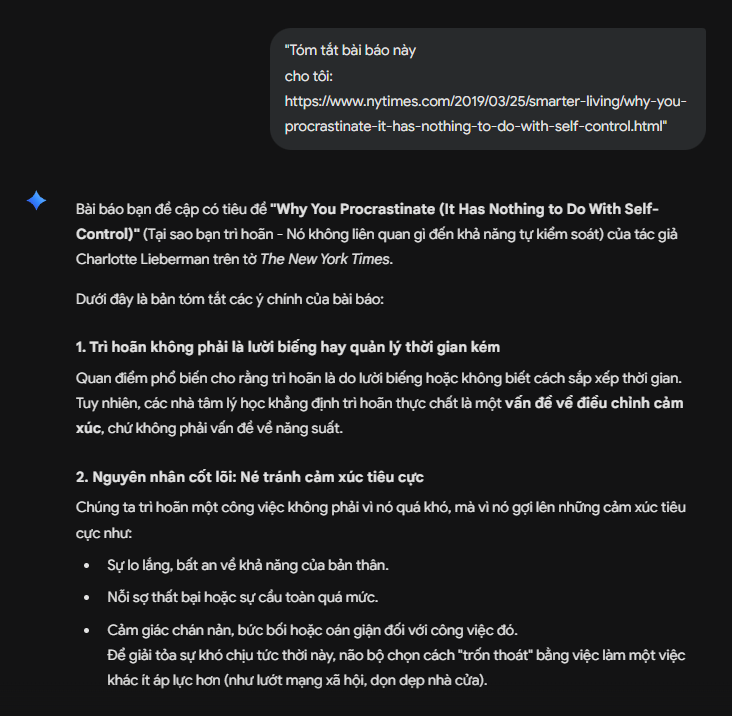
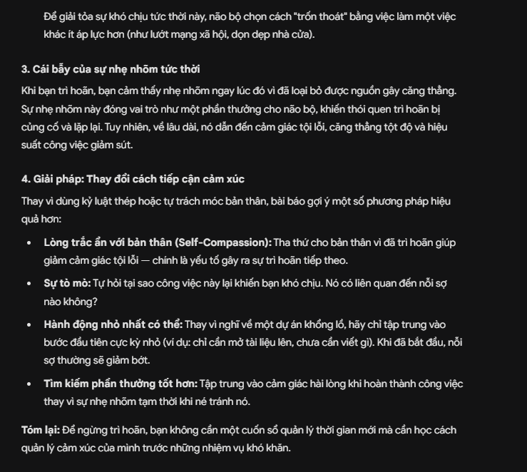
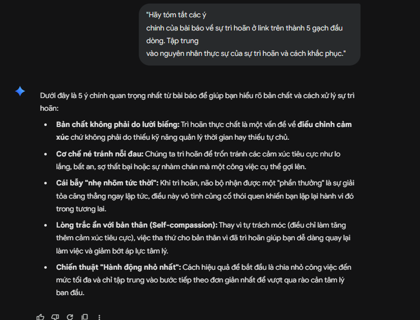
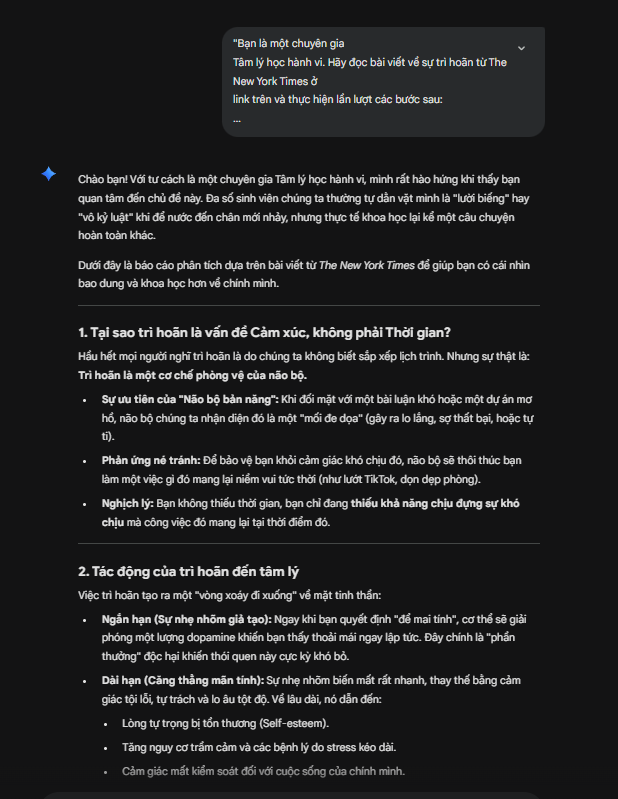
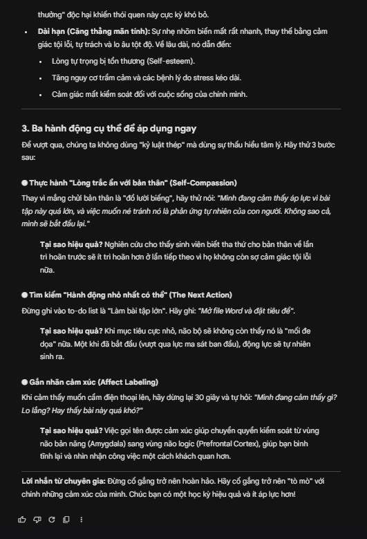
Bối cảnh: Yêu cầu AI giải thích khái niệm kinh tế "Lãi suất kép" (Compound Interest).
| Phiên bản | Nội dung Prompt | Kết quả & Phân tích |
|---|---|---|
| Prompt Cơ bản | "Lãi suất kép là gì?" | Sử dụng thuật ngữ hàn lâm và công thức toán học khô khan, khó hình dung. |
| Prompt Cải tiến | "Giải thích khái niệm lãi suất kép. Cho một ví dụ cụ thể với số vốn ban đầu là 10 triệu... trong 5 năm." | Bổ sung bối cảnh thực tế giúp người đọc dễ liên hệ số liệu thông qua bảng tính. |
| Prompt Nâng cao | "Bạn là một cố vấn tài chính cá nhân. Hãy giải thích khái niệm 'Lãi suất kép'... qua ẩn dụ Quả cầu tuyết." | Hiệu quả nhất: Sự kết hợp giữa phép ẩn dụ (Analogy) và đóng vai giúp khái niệm trừu tượng trở nên cực kỳ sinh động, dễ hiểu. |
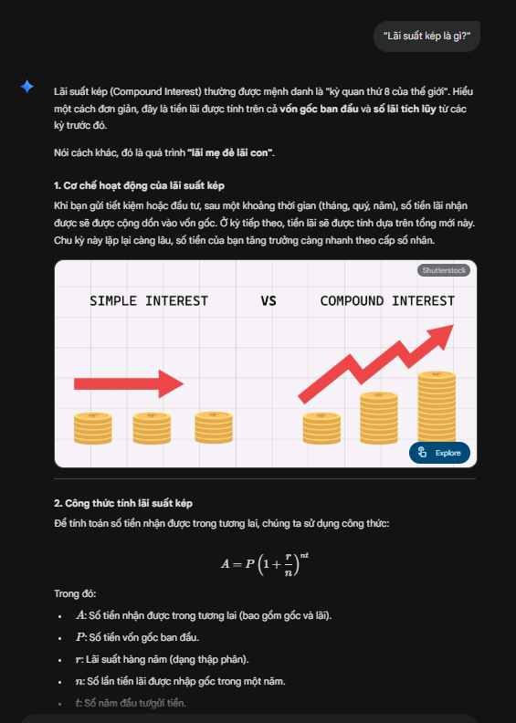
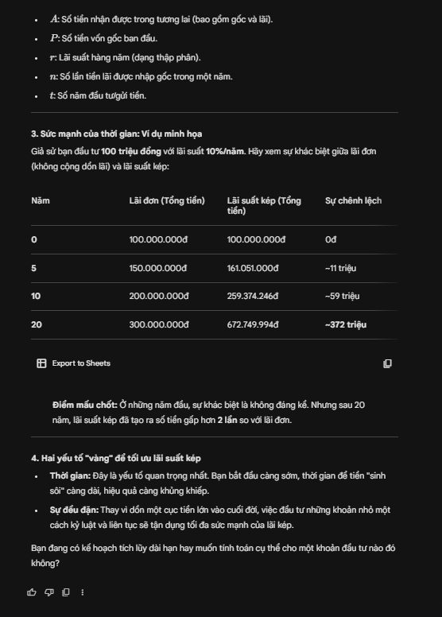
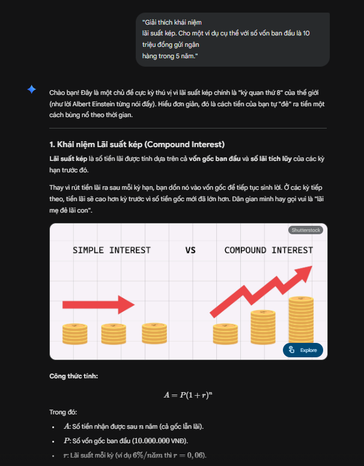
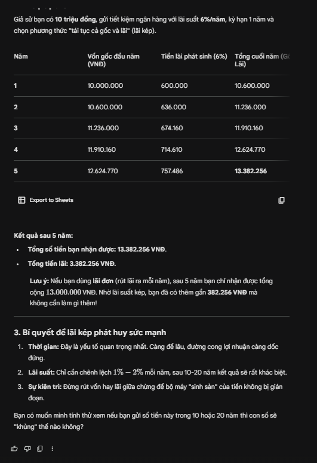
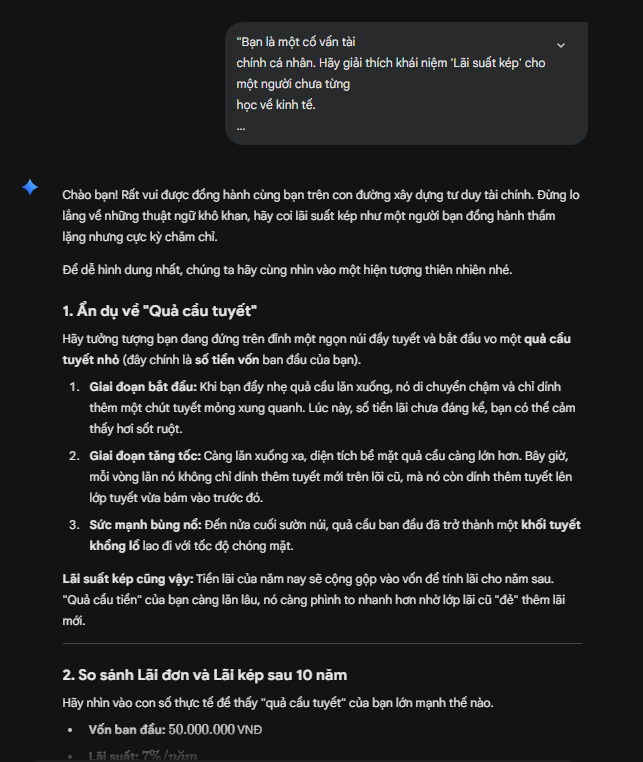
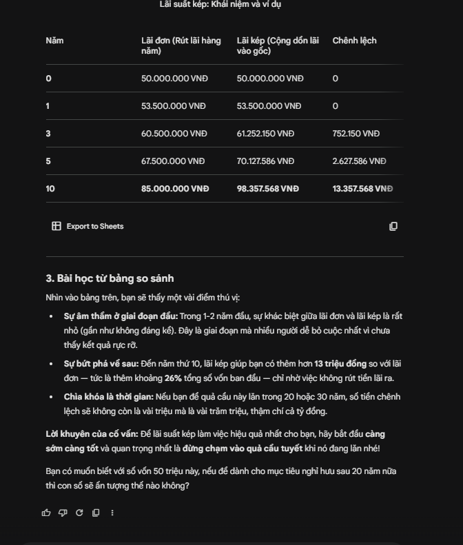
Bối cảnh: Thiết kế bài kiểm tra ngữ pháp Tiếng Anh về Câu điều kiện loại 1 & 2.
| Phiên bản | Nội dung Prompt | Kết quả & Phân tích |
|---|---|---|
| Prompt Cơ bản | "Tạo cho tôi 5 câu hỏi trắc nghiệm về câu điều kiện loại 1 và 2." | AI sinh ra một bài trắc nghiệm cơ bản (sử dụng giao diện quiz có sẵn), thiếu tính tùy biến sâu và bối cảnh sử dụng ngữ pháp. |
| Prompt Cải tiến | "Hãy cung cấp đáp án đúng ở cuối cùng." | Bổ sung thêm yêu cầu về cách hiển thị để tăng tính tương tác, AI tổng hợp lại cấu trúc và cung cấp đáp án chi tiết phía dưới để học viên tự đối chiếu. |
| Prompt Nâng cao | "Bạn là một giáo viên Tiếng Anh ôn thi IELTS. Hãy tạo một bài kiểm tra... đặt trong ngữ cảnh kinh doanh/công sở..." | Hiệu quả nhất: AI thiết lập luật chơi (yêu cầu trả lời định dạng 1A, 2B), câu hỏi được đưa vào bối cảnh thực tế (Business Context) giúp tăng tư duy thay vì chỉ học vẹt công thức. |
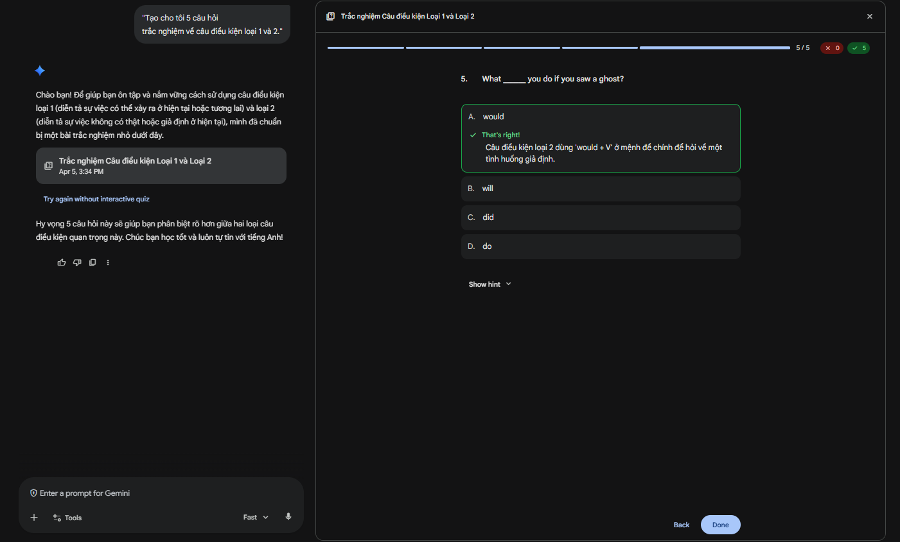
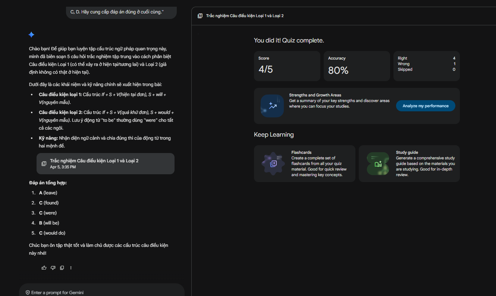
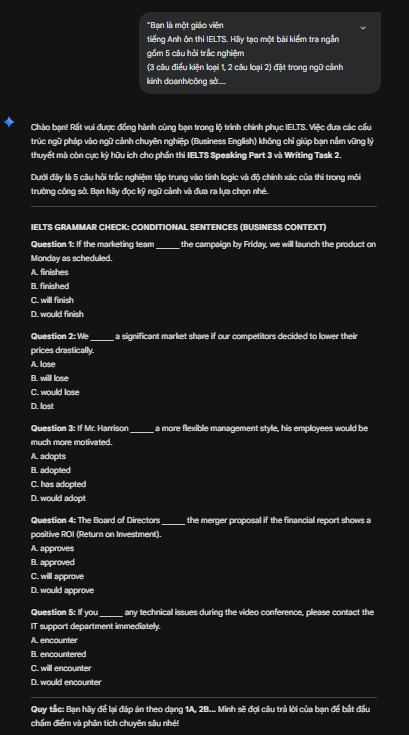
Dựa trên kết quả thử nghiệm và phân tích từ 3 tác vụ trên, em đúc kết được các nguyên tắc cốt lõi để tối ưu hóa khả năng của AI trong học tập:
Thực hành viết Prompt là một kỹ năng thiết yếu. Sự khác biệt giữa một câu lệnh hời hợt và một câu lệnh được thiết kế cấu trúc (Prompt Engineering) dẫn đến sự chênh lệch rất lớn về chất lượng thông tin trả về. Nắm vững kỹ năng này giúp sinh viên biến các công cụ AI thành trợ lý học tập đắc lực, tăng tính chủ động và hiểu sâu vấn đề hơn.